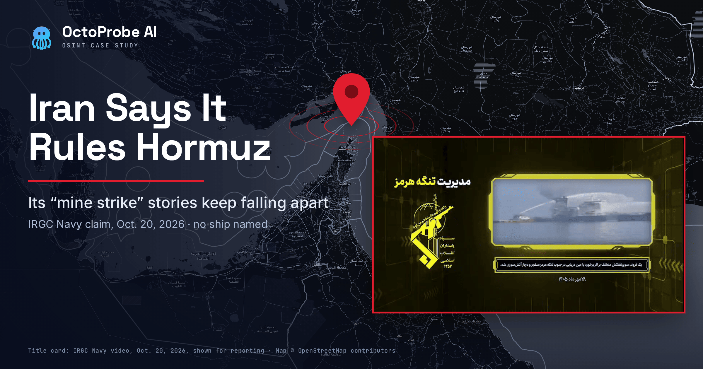
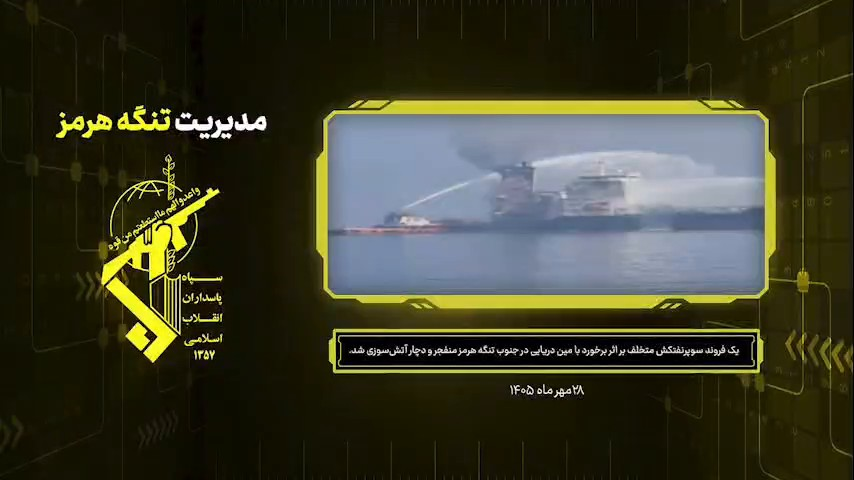
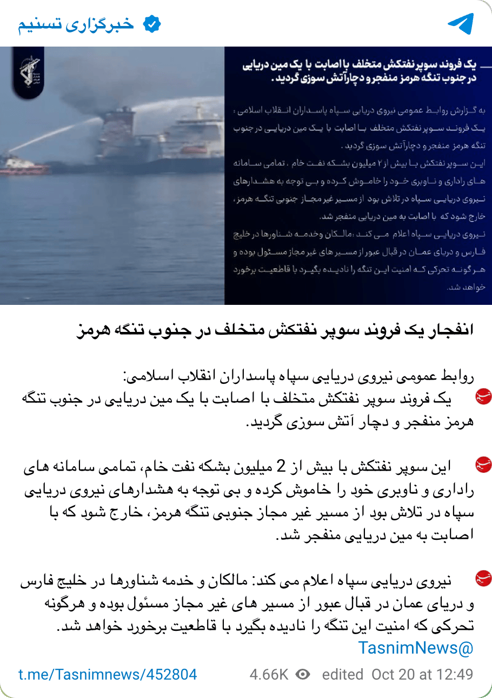
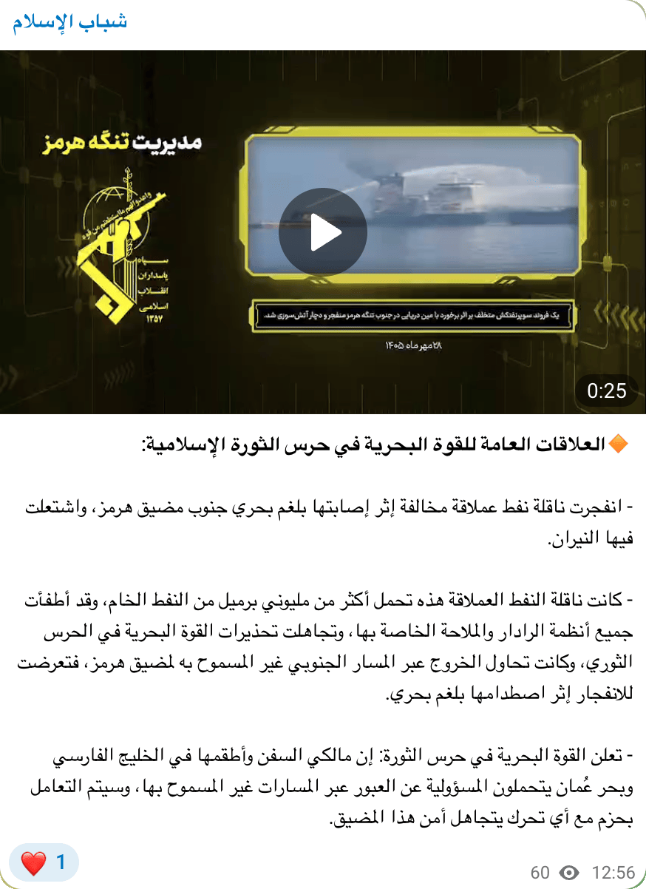
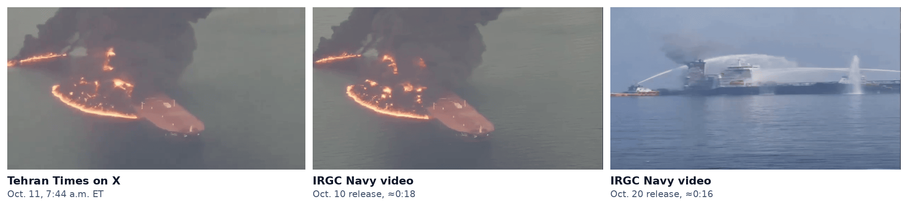
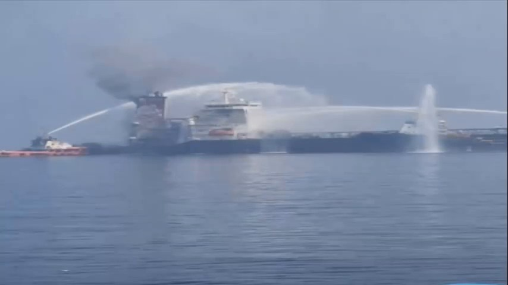

No one outside Iran has confirmed it. On Oct. 20, 2026, the Revolutionary Guards said a “violating” supertanker hit a mine south of the Strait of Hormuz, but they named no ship and gave no position. Maritime authorities logged no such strike, and a U.S. Central Command spokesman called Tehran’s mine claims false.
Iran’s Revolutionary Guards want the world to believe they run the Strait of Hormuz. On Tuesday they ran another advertisement.
The Guards’ navy said a “violating” supertanker hauling “more than 2 million barrels of crude oil” had switched off “all its radar and navigation systems,” ignored its warnings and tried to slip out by “the unauthorized southern route of the Strait of Hormuz.” Then, the Guards said, it hit a sea mine and caught fire. Tasnim News Agency was reporting the strike by 10:38 a.m. Eastern, according to the Newsquawk headline feed; the Tasnim Telegram post quoted here bears a 12:49 p.m. edit stamp (Tasnim; Newsquawk).
The point came at the end. “Owners and crews of vessels in the Persian Gulf and Sea of Oman,” the Guards said, are “responsible” for using unauthorized routes, and “any movement that disregards the security of this strait will be dealt with decisively.”
Strip away the packaging and little is left. Every account of the strike traces back to the Guards or to Iranian state media. The Guards named no vessel and gave no position. The only tanker incident maritime authorities logged around that time happened more than 400 nautical miles away, in the Arabian Sea. And a U.S. Central Command spokesman called Tehran’s latest mine claims false that morning. Until someone outside Iran confirms it, Tuesday’s “mine strike” is best read as propaganda.
The Guards’ own record backs that reading. Ten days earlier they told nearly the same story. The next morning, Iran’s English-language Tehran Times described that ship in terms others were using for one real tanker, GEM NO.2. But GEM NO.2 had been hit by a projectile while riding at anchor inside the Gulf, about 70 nautical miles from the strait. And a tanker video Iranian outlets pushed with a similar claim in the days before turned out to be more than seven months old.
Editor’s note: The Islamic Revolutionary Guard Corps was designated a Foreign Terrorist Organization by the secretary of state on April 8, 2019. In the Matter of the Designation of the Islamic Revolutionary Guard Corps (and Other Aliases) as a Foreign Terrorist Organization, 84 Fed. Reg. 15,278 (Apr. 15, 2019); see also U.S. Department of State, “Foreign Terrorist Organizations.”
Editor’s note: The Tasnim post is in Persian; quotations are OctoProbe’s translation. The original reads, in part, «این سوپر نفتکش با بیش از 2 میلیون بشکه نفت خام، تمامی سامانه های راداری و ناوبری خود را خاموش کرده…»
What is the IRGC’s “Management of the Strait of Hormuz” brand?
It is a branded video series, and the title is the claim. The clip that accompanied Tuesday’s statement opens on a yellow-and-black card reading «مدیریت تنگه هرمز», “Management of the Strait of Hormuz.” It is dated «۲۸ مهر ماه ۱۴۰۵», the Persian-calendar date for Tuesday, Oct. 20, 2026. It closes on the IRGC emblem over a Qur’anic verse: “And prepare against them whatever you are able of power” (8:60, Sahih International translation).

The same title card, caption box and emblem outro frame at least four earlier IRGC Navy tanker claims posted to the Guards’ official Sepah News site between Oct. 10 and Oct. 17, Tehran time (Sepah News 39345; 39376; 39377; 39716). It works like a recurring television segment in which Tehran polices a waterway it does not legally control.
Sometimes the Guards drop the subtext. “The Strait of Hormuz is closed,” the IRGC Navy declared in a release dated Oct. 17 in Tehran, the evening of Oct. 16 in Washington (Sepah News 39716).
Editor’s note: Original: «تنگه هرمز بسته است». OctoProbe translation.
How often have the Guards told this story?
Often enough that the words are recycled, too. Tuesday’s statement repeats phrasing the Guards have used again and again since late summer (Sepah News dates, Tehran time):
- “More than 2 million barrels of crude”: Oct. 17, twice (Sepah News 39716; 39740). Two million barrels is the round-number load of a very large crude carrier. It fits any supertanker.
- Positioning, radar and navigation systems “switched off”: Oct. 10, Oct. 11, Oct. 17 and Oct. 18 (39345; 39376; 39716; 39846).
- An “unauthorized” or “illegal” route south of the strait: Aug. 31, Oct. 11 and Oct. 18 (37157; 39376; 39846).
Each element does narrative work. The ship went dark, so it was sneaking. It took the southern route, near Oman, so it was defying Tehran. It was big and laden, so the punishment was spectacular. And a claim that a ship was running dark can’t be checked unless someone names the ship. The Guards never do.
Who is the threat aimed at?
Shipowners, managers, charterers and insurers: the people who decide whether a tanker sails. Tuesday’s statement puts “owners and crews” on notice. Earlier versions went further. Any ship in the strait that switches off its navigation and identification systems “will be identified as hostile” and dealt with “severely and decisively” (Sepah News 39376; 39846).
Editor’s note: Original (Sepah News 39376): «به عنوان متخاصم شناسایی و با آن به شدت و قاطعیت برخورد خواهد شد». OctoProbe translation.
Who amplified the claim?
The message moved through state media, the militia ecosystem and the wires within hours.

| Time (Eastern) | Outlet | What | Views (as of 3:05 p.m.) |
|---|---|---|---|
| ~5:30 a.m. | Iran International | Reports an earlier IRGC “two tankers” claim | n/a |
| 10:38 a.m. | Newsquawk (citing Tasnim) | One “violating” tanker on fire in the southern corridor | n/a |
| 10:40 a.m. | Newsquawk (CENTCOM spokesman) | Mine claims “false” | n/a |
| By 12:13 p.m. | Sepah News (via AFP) | “Two violating oil tankers were set ablaze and halted” | n/a |
| 12:49 p.m. (edit stamp) | Tasnim, Telegram | One “supertanker,” 2 million-plus barrels; still image | 6,570 |
| 12:56 p.m. | Shabab al-Islam (“Youth of Islam”), Telegram | Arabic translation plus 25-second IRGC video | 94 |
| 12:59 p.m. | Reuters via Devdiscourse | “Supertanker” hit mine | n/a |
| 1:20 p.m. | Tanjug via B92 | CENTCOM, via Al Jazeera: claims “not true”; strait open | n/a |
| 1:39 p.m. | TASS | Same, citing Tasnim | n/a |
Shabab al-Islam (t.me/shabab_alislam/67404) is an Arabic-language board whose bio calls it «وحدة الإعلام الحربي لأصحاب الكهف», the “War Media Unit of Ashab al-Kahf.” Its feed on Tuesday mixed Iraqi banking notices, Houthi “military media” releases and statements from Iranian commanders (channel preview). The Hormuz post carried no “forwarded from” tag. The video was re-uploaded, and the translation carried the Guards’ line to an Arabic-speaking audience.

Fewer than a hundred views is a modest audience. That isn’t the point. The relay turns one unverified IRGC claim into something that looks like a chorus.
What do maritime authorities say happened?
Nothing like what the Guards described. The U.K. Maritime Trade Operations center, the Royal Navy-run desk that merchant masters report to, published one tanker report Tuesday. Advisory 178-26 reads, in full:
“UKMTO has received a report of an incident involving a tanker and military forces approximately 121NM east of Duqm, Oman. Reports indicate that the tanker was subject to interaction as part of ongoing military activity in the region. Authorities are aware and relevant investigations remain ongoing. Vessels are advised to consider the latest maritime security information and maintain awareness of the evolving operational environment.” (UKMTO; PDF)
The PDF puts the incident at 1000 UTC on Oct. 19 (6 a.m. Eastern), more than a day before the Guards’ claim, and rates the source “Verified.” The EU-backed Maritime Security Centre–Indian Ocean placed it “in the Arabian Sea” (MSCIO Advisory 09-2026). Duqm itself is more than 400 nautical miles from the narrows of Hormuz, and a point 121 nautical miles east of it is farther still. The report describes “interaction” with “military forces,” not a mine. UKMTO used nearly identical language earlier this month for Advisory 163-26, “an incident involving a tanker and military forces in the Gulf of Oman.” Its weekly summary ties that entry to OCEAN MOLICA, which it lists as general cargo, and to a Central Command report that U.S. forces had disabled a ship that “attempted to run the on going naval blockade” (UKMTO VRA overview, Oct. 16).
Editor’s note: Great-circle distances were measured to a reference point in the Hormuz narrows at 26.6° N, 56.4° E. Duqm port (19.67° N, 57.71° E) is about 422 nautical miles from that point; a point projected 121 nautical miles due east of the port (about 19.7° N, 59.9° E) is about 458. UKMTO’s map graphic shades an area nearer the coast, so the incident position is approximate.
UKMTO’s incident list, going back to Sept. 28, holds no Oct. 20 report from the strait. None of its entries describes a mine. Every strike it logged inside the strait over that period is blamed on an “unknown” or “unidentified” projectile (UKMTO). The silence is not proof on its own. UKMTO’s weekly summary says it is “struggling to accurately report true number of attacks with majority of vessels attacked refusing to report” (UKMTO VRA overview, Oct. 16). But the Guards’ claim has no independent support.
Central Command was blunter. A spokesman called Iran’s claims about tankers hitting mines false, and the Newsquawk feed carried his words in English: “We have cleared the international waterways in the Strait of Hormuz of mines” (Newsquawk). Serbia’s Tanjug news agency and China’s CGTN reported that the remarks were made to Al Jazeera; CGTN’s rendering reads “international passages” (B92/Tanjug; CGTN). According to Tanjug, the spokesman also said 95 percent of vessels are getting through the strait despite Tehran’s claims that it is closed, and called the attacks on shipping a sign of the IRGC’s “desperation” under the U.S. blockade (B92/Tanjug).
Editor’s note: Tanjug reported the 95 percent figure and the “desperation” remark in Serbian (“95 odsto plovila uspešno prolazi kroz moreuz, uprkos tvrdnjama Teherana da je zatvoren”; “očaj”); the English renderings are OctoProbe’s. No English-language transcript of the spokesman’s remarks from Central Command or Al Jazeera was found.
Traffic is undeniably down. A joint maritime advisory earlier this month cited independent tracking showing transits in the “single-digit numbers,” against U.S. figures of about 29 a day (JMIC Advisory Note, Oct. 11). But suppression by force is not the orderly “management” the Guards are selling. Iran, the spokesman said per Tanjug, uses “missiles and drones” in its attacks.
CENTCOM’s denial was on the Newsquawk feed by 10:40 a.m. Eastern. According to Tanjug, it answered Iran’s claim that two tankers had hit mines, made in an IRGC statement earlier that day that said two “violating oil tankers were set ablaze and halted” (AFP via The Hindu; Iran International). Tehran hasn’t said whether the afternoon “supertanker” is one of those two or a third ship.
What happened the last time the Guards told this story?
It fell apart. On Saturday, Oct. 10, the Guards issued the claim they would repeat on Tuesday. “Statement No. 19,” posted on Sepah News at 8:17 p.m. Tehran time (12:47 p.m. Eastern), said a “violating supertanker carrying crude oil,” which “intended to exit via the unauthorized route of the Strait of Hormuz,” had suffered “a violent explosion” after hitting a sea mine. The ship had “switched off its navigation and positioning systems,” the Guards said, and its fire was “clearly visible” to people on the coast. “A horrific fire is the fate of every violating tanker that seeks to ignore the security and rules of the Strait of Hormuz” (Sepah News 39345). The release carried a branded video of a burning hull shot from the air. Anadolu Agency’s account of the statement added a “southern route” and described the ship as “capable of carrying around 2 million barrels of oil” (Anadolu Agency).
The next morning, Tehran Times added a detail for English-language readers:
“Maritime cargo-tracking sources say the supertanker that exploded last night while attempting an unauthorized passage through the Strait of Hormuz was carrying 2 million barrels of Saudi crude oil.” (Tehran Times, X)
The post went up at 7:44 a.m. Eastern on Oct. 11. Its 4-second clip is a cut from the Guards’ Oct. 10 video.

Editor’s note: The Tehran Times clip (848 by 464 pixels, 3.6 seconds) was compared frame by frame against the Sepah News Oct. 10 video and matches the segment at about 18 seconds. Neither matches any frame of the Oct. 20 clip.
That description matched what was being said that week about one real ship: GEM NO.2, a Panama-flagged supertanker that Reuters reported was “fully laden with oil” when it was struck (gCaptain). Later on Oct. 11, an X account described GEM NO.2 as “reportedly carrying around 2 million barrels of Saudi crude” (see below). Tehran Times did not name the ship.
The facts about GEM NO.2 don’t fit the Guards’ story. The tanker wasn’t running a route. It was riding at anchor off the UAE coast, inside the Gulf, about 70 nautical miles southwest of the narrows. It wasn’t hit on Saturday night. It was hit on Friday, Oct. 9, at about 1000 GMT, roughly 31 hours before the Guards’ release. And no one outside Iran says it hit a mine. UKMTO recorded an “unknown projectile” 13 nautical miles west of Al Jazeera, UAE, without naming the ship; the Joint Maritime Information Center’s next advisory identified that incident as GEM NO.2, “at anchor in UAE TTW” (UKMTO; JMIC Advisory Note, Oct. 11). India’s shipping minister said the ship “was subjected to a drone attack at Sharjah Anchorage” (The Hindu). UKMTO said the fire was extinguished. The UAE’s WAM news agency reported that the coast guard rescued 22 crew members from a tanker fire on Oct. 10, according to All India Radio, which tied that rescue to GEM NO.2 (All India Radio).
Editor’s note: UKMTO’s weekly summary gives the Oct. 9 position as 25°44′ N, 055°34′ E. The great-circle distance to the narrows reference point (26.6° N, 56.4° E) is about 69 nautical miles; measured to Ras Musandam instead, it is about 59.
The one tanker UKMTO did log in the strait that Saturday, an unnamed outbound ship “struck on the port side by an unknown projectile,” was reported at 1920 UTC, about two and a half hours after the Guards published their claim (UKMTO Warning 162-26).
Whether the Guards’ aerial footage shows GEM NO.2 at all is a separate question. The footage has not been traced to a source.
Editor’s note: Original: «یک فروند سوپرنفتکش متخلف حامل نفت خام، که قصد خروج از مسیر غیر مجاز تنگه هرمز را داشت، به دلیل برخورد با مین دریایی از مسیر پر خطر اعلام شده، دچار انفجار پر شدت گردید» and «آتش سوزی مهیب عاقبت هر نفتکش متخلفی است که بخواهد امنیت و قوانین تنگه هرمز را نادیده بگیرد». OctoProbe translation.
Have Iranian outlets recycled tanker footage before?
Yes, within the past week. Amid the Guards’ Oct. 17 and Oct. 18 mine claims, including an Oct. 18 claim of a strike on the “unauthorized southern route” (Sepah News 39846), Iranian accounts and outlets “including the Tasnim and Fars news agencies, circulated a video showing an oil tanker ablaze south of the Strait of Hormuz,” according to the Arab fact-checking site Misbar. A reverse image search showed “the video was published by news accounts on X on March 1,” presented as Iran targeting the Palau-flagged Sky Light, Misbar found in a check published Oct. 19 (Misbar).
The March original is public. “Video shows Palau-flagged oil tanker Skylight on fire near the Strait of Hormuz after it was attacked,” the news account Insider Paper posted at 6:11 a.m. Eastern on March 1 (Insider Paper, X). That clip, a distant hull under a pillar of black smoke on gray water, does not appear in Tuesday’s IRGC video.
What does the Oct. 20 video show?
A real tanker fire, undated and unplaced. Between the IRGC bumpers are about 20 seconds of footage:
- 0:01–0:13: A soft, washed-out, nearly black-and-white close view of a dark superstructure pouring smoke under a hose stream. The camera pans right across a white deckhouse with an orange-red lifeboat.
- 0:13: A hard cut to a sharp, full-color shot under a blue sky. A long, dark-hulled tanker burns at its aft superstructure and funnel while an orange-hulled tug and at least two other vessels pour water on it. A white superstructure with an orange-red lifeboat sits beside the fire, apparently a second vessel moored alongside.
- 0:17: A dip and re-cut to a slightly different framing of the same wide scene.

The two segments look nothing alike in color or sharpness; average color saturation in the first is about a quarter of the second’s. But the layout revealed in the pan matches the wide shot, so they probably show one fire filmed from two vantage points or on two devices. That isn’t certain at this resolution.
Nothing in the frames dates or places the fire. There’s no on-screen timestamp, no natural sound (the track is a stock score), no coastline and no legible name, hull number or flag. The funnel colors are unconfirmed; fire damage and compression make them unreliable. The only date is the one on the IRGC’s title card. The fire burns high, at the deckhouse and funnel, and no waterline breach or slick is visible. That doesn’t rule out a mine, but nothing in the clip shows one.
Tasnim didn’t post the video. It ran a single still, a crop of the color wide shot.
Editor’s note: The clip served by the Telegram channel is an 854-by-480 H.264 file whose embedded creation time is 12:54 p.m. Eastern on Oct. 20, two minutes before it was posted. That stamp reflects when the file was encoded, not when the footage was shot. Keyframe and color measurements were made with FFmpeg.
Was the footage recycled?
No earlier copy has turned up yet. Given the weekend’s Sky Light episode, it’s the obvious question. But Tuesday’s clip shares no frames with the Guards’ Oct. 10, 11 or 17 videos, with the Tehran Times clip, with an X video of GEM NO.2 or with the March Sky Light clip. Reverse-image searches of five frames, including the still Tasnim ran, found no earlier copy; the only match was an Iranian site republishing the IRGC claim itself. Images of other tanker fires, such as the March 2025 Stena Immaculate collision and the Sounion blaze in the Red Sea, look similar at a glance but don’t match.
That isn’t a clean bill of health. The frames are small and heavily compressed, with no coastline or landmark to anchor a match, and footage that first moved on WhatsApp or private channels wouldn’t show up in search engines.
Editor’s note: Each one-second frame of the Oct. 20 clip was downscaled and compared against frames from Sepah News videos 39345, 39376, 39377 and 39716, the Tehran Times and @IsraelMatzav clips, and the Insider Paper Skylight clip. Twelve reverse-image searches (Google Lens and Yandex on five frames, Bing Visual Search and TinEye on two) were run on Oct. 20, 2026, around 2:10 p.m. Eastern.
Which ship was it?
Nobody knows. The Guards haven’t named the tanker, and neither has anyone else. TASS noted that “the name of the vessel was not disclosed” (TASS).
GEM NO.2 is the obvious candidate to check, because Tehran Times described the Guards’ Oct. 10 ship in the terms then being used for it. “GEM NO.2 was struck by an unknown projectile approximately 13nm west of Al Jazeera, UAE, at 1000 (GMT),” the British risk firm Vanguard said, according to Reuters (gCaptain). India’s consulate in Dubai said all 22 Indian crew members were rescued and safe (The Hindu; All India Radio).
On Oct. 11, the X account @IsraelMatzav posted shipboard video it attributed to GEM NO.2:
*Supertanker carrying 2 million barrels of Saudi oil hit off UAE coast:*
— (((IsraelMatzav))) (@IsraelMatzav) October 11, 2026
Footage shows the aftermath after the Panama-flagged supertanker GEM NO.2 was hit by a projectile off the UAE coast.
The tanker was reportedly carrying around 2 million barrels of Saudi crude and was sailing well outside the Strait of Hormuz, in waters used by ships trying to avoid the Iranian threat.
No one has claimed responsibility yet, but suspicion is focusing on Iran.
The attack raises a serious concern: even tankers avoiding the Strait of Hormuz may no longer be safe. pic.twitter.com/eLDNAovdla
The post gets the basics right and one key detail wrong. The ship was hit off the UAE, but it was not “sailing well outside the Strait of Hormuz.” It was at anchor, inside the Gulf. Its video, carrying a “LIVE” bug from an unknown original source, shows a smoke-choked red deck and crew strapped into what appears to be a lifeboat. None of it appears in the IRGC’s clip.
The resemblance lies elsewhere. In the IRGC’s wide shot, the burning ship has a dark hull and a smoke-blackened aft block that appears to carry two stacks. A white-housed vessel is moored alongside, and fireboats work the blaze in calm water, the kind of scene an anchorage produces. A photo on GEM NO.2’s VesselFinder listing shows the 2017 Japanese-built supertanker with a dark hull, a cream deckhouse and twin stacks (VesselFinder). The features are consistent, but none is unique. At 480 pixels, any fire-blackened supertanker would look much the same, and the funnel markings that could settle it are buried in smoke.
If the clip does show GEM NO.2, the Guards would have relabeled the same Oct. 9 strike twice: first as an Oct. 10 mine strike, then as an Oct. 20 one. That is a lead, not a finding.
Nor does GEM NO.2 fit Tuesday’s story. Its last public tracking positions, on Oct. 16 and 17, put it inside the Gulf, creeping at 2.6 knots, with Ras Tanura and Abu Dhabi given as destinations on different trackers. It was not running for the exit (TankerMap; VesselFinder; MagicPort).
Who owns GEM NO.2?
A Panama-registered company with a Taiwanese manager. Shipping databases list the registered owner as GEM NO. 2 Maritime Corp.; Reuters called the ship’s “Panama-based operator” Gem No.2 Maritime Corp. The ship manager is Global Energy Maritime Co. of Taiwan, and the ISM manager is Fleet Management Ltd. of Hong Kong (TankerMap; MagicPort; VesselScore). Its protection-and-indemnity insurer is Steamship Mutual, on risk through Feb. 20, 2027 (Steamship Mutual). The vessel does not appear on U.S. Treasury, U.K. or EU consolidated sanctions lists.
Editor’s note: Sanctions lists were checked on Oct. 20, 2026, by IMO number (9735373), MMSI (354264000) and name against OFAC’s SDN and consolidated non-SDN files, the U.K. Sanctions List and the EU’s consolidated financial-sanctions file. EU vessel listings in annexes to Regulation 833/2014 were not checked.
Where has GEM NO.2 been?
Mostly at Gulf terminals and anchorages. The ship called at Saudi Arabia’s Ras Tanura terminal in early April and last departed the Al Hamriyah anchorage off Sharjah on Sept. 19 (TankerMap; VesselFinder). It was hit at anchor on Oct. 9. Its most recent free-tier positions, on Oct. 16 and 17, show it inside the Gulf with a laden draft of 20.5 meters. Free trackers show nothing after that, which reflects their coverage, not proof that the ship went dark.
What still can’t be verified?
- Any independent, non-Iranian confirmation that a tanker struck a mine on Oct. 19 or 20, anywhere near Hormuz.
- The name of the tanker in the Oct. 20 claim, and whether GEM NO.2 is the ship in the IRGC’s footage.
- Its track, and whether it was running dark.
- Whether the afternoon “supertanker” is one of the morning’s “two tankers.”
- When and where the Oct. 20 footage was shot, and who filmed it; the same for the Guards’ Oct. 10 aerial video.
- Who the “military forces” were in the Duqm incident, and which tanker was involved.
Why does Iran claim to manage Hormuz?
Because control of the strait is Tehran’s main lever in the war. Iran has no recognized authority to license passage through Hormuz, which falls under the transit-passage regime of the U.N. Convention on the Law of the Sea (Euronews). Since the U.S.-Israeli strikes that opened the war in late February, the Guards have demanded that ships seek their permission and have repeatedly hit vessels using the Omani side of the strait (AFP via The Hindu). Washington answered with a naval blockade of its own (UKMTO VRA overview, Oct. 16).
The mine claims have a track record. Central Command called a near-identical IRGC claim false on Aug. 31, saying no ship had hit a mine: a supertanker supposedly stopped cold by two mines on the “illegal route south of the Strait” (VOA Persian; Sepah News 37157).
Frequently Asked Questions
Did a tanker hit an Iranian mine in the Strait of Hormuz on Oct. 20, 2026?
No independent source has confirmed it. The claim comes from the IRGC Navy and Iranian state media. UKMTO logged no Oct. 20 incident in the strait; the only tanker incident it reported that day was about 121 nautical miles east of Duqm, Oman, more than 400 nautical miles from Hormuz. A U.S. Central Command spokesman called Iran’s claims that tankers had hit mines false.
What is GEM NO.2?
GEM NO.2 (IMO 9735373) is a Panama-flagged, 2017-built supertanker managed by Global Energy Maritime Co. of Taiwan. On Oct. 9, 2026, it was struck by what UKMTO called an unknown projectile while anchored off the UAE coast, inside the Gulf. UKMTO said the fire was extinguished, and India’s consulate in Dubai said all 22 Indian crew members were rescued and safe.
Is the IRGC’s Oct. 20 tanker-fire video old footage?
No earlier copy has turned up. The clip shares no frames with the IRGC’s Oct. 10, 11 or 17 videos, a Tehran Times clip, an X video of GEM NO.2 or a March 2026 video of the tanker Skylight. A separate video that Iranian outlets, including Tasnim and Fars, circulated in the days before was old, according to the fact-checking site Misbar.
Does Iran control passage through the Strait of Hormuz?
Not lawfully. The strait falls under the transit-passage regime of the U.N. Convention on the Law of the Sea, and Tehran’s “authorized” and “unauthorized” routes have no recognized legal basis. Iran’s attacks have cut traffic sharply, but a CENTCOM spokesman said 95 percent of vessels still get through, according to Serbia’s Tanjug news agency.
Is the IRGC a designated terrorist organization?
Yes. The secretary of state designated the Islamic Revolutionary Guard Corps a Foreign Terrorist Organization on April 8, 2019, published at 84 Fed. Reg. 15,278 (Apr. 15, 2019).
Disclaimer
This report relies on public statements, maritime security advisories, ship-tracking records, sanctions lists, published journalism and video posted publicly online.